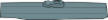
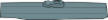
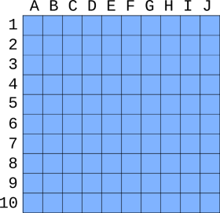
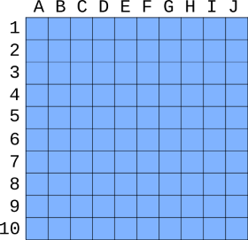

 



Battleships
Attribution
Licensed under GNU GENERAL PUBLIC LICENSE Version 3.
Original Python code
import math
import random
import pygame
import pgzrun
from pgzero.actor import Actor
class Grid:
# Grid dimensions are in terms of screen pixels
# Tools to convert between different values are
# included as static methods
def __init__ (self, start_grid, grid_size):
self.start_grid = start_grid
self.grid_size = grid_size
# Does co-ordinates match this grid
def check_in_grid (self, screen_pos):
if (screen_pos[0] < self.start_grid[0] or
screen_pos[1] < self.start_grid[1] or
screen_pos[0] > self.start_grid[0] + (self.grid_size[0] * 10) or
screen_pos[1] > self.start_grid[1] + (self.grid_size[1] * 10)):
return False
else:
return True
def get_grid_pos (self, screen_pos):
x_offset = screen_pos[0] - self.start_grid[0]
x = math.floor(x_offset / self.grid_size[0])
y_offset = screen_pos[1] - self.start_grid[1]
y = math.floor(y_offset / self.grid_size[1])
if (x < 0 or y < 0 or x > 9 or y > 9):
return None
return (x,y)
# Gets top left of a grid position - returns as screen position
def grid_pos_to_screen_pos (self, grid_pos):
x = self.start_grid[0] + (grid_pos[0] * self.grid_size[0])
y = self.start_grid[1] + (grid_pos[1] * self.grid_size[1])
return (x,y)
# Ship is referred to using an x,y position
class Ship (Actor):
def __init__ (self, ship_type, grid, grid_pos, direction, img_txt="", grid_size=(38,28), hidden=False):
Actor.__init__(self, ship_type, (10,10))
self.grid_size = grid_size
self.ship_type = ship_type
self.grid = grid
self.image = ship_type+img_txt
self.grid_pos = grid_pos
self.topleft = self.grid.grid_pos_to_screen_pos((grid_pos))
# Set the actor anchor position to centre of the first square
self.anchor = (grid_size[0]/2, grid_size[1]/2)
self.direction = direction
if (direction == 'vertical'):
self.angle = -90
self.hidden = hidden
if (ship_type == "destroyer"):
self.ship_size = 2
self.hits = [False, False]
elif (ship_type == "cruiser"):
self.ship_size = 3
self.hits = [False, False, False]
elif (ship_type == "submarine"):
self.ship_size = 3
self.hits = [False, False, False]
elif (ship_type == "battleship"):
self.ship_size = 4
self.hits = [False, False, False, False]
elif (ship_type == "carrier"):
self.ship_size = 5
self.hits = [False, False, False, False, False]
def draw(self):
if (self.hidden):
return
Actor.draw(self)
def is_sunk (self):
if (False in self.hits):
return False
return True
def fire (self, fire_grid_pos):
if self.direction == 'horizontal':
if (fire_grid_pos[0] >= self.grid_pos[0] and
fire_grid_pos[0] < self.grid_pos[0]+self.ship_size and
fire_grid_pos[1] == self.grid_pos[1]):
self.hits[fire_grid_pos[0]-self.grid_pos[0]] = True
return True
else:
if (fire_grid_pos[0] == self.grid_pos[0] and
fire_grid_pos[1] >= self.grid_pos[1] and
fire_grid_pos[1] < self.grid_pos[1]+self.ship_size):
self.hits[fire_grid_pos[1]-self.grid_pos[1]] = True
return True
return False
# Does this ship cover this grid_position
def includes_grid_pos (self, check_grid_pos):
# If first pos then return True
if (self.grid_pos == check_grid_pos):
return True
# check x axis
elif (self.direction == 'horizontal' and
self.grid_pos[1] == check_grid_pos[1] and
check_grid_pos[0] >= self.grid_pos[0] and
check_grid_pos[0] < self.grid_pos[0] + self.ship_size):
return True
elif (self.direction == 'vertical' and
self.grid_pos[0] == check_grid_pos[0] and
check_grid_pos[1] >= self.grid_pos[1] and
check_grid_pos[1] < self.grid_pos[1] + self.ship_size):
return True
else :
return False
class Shot(Actor):
def __init__ (self, hit, pos):
Actor.__init__(self,hit)
self.topleft=pos
class Fleet:
def __init__ (self, start_grid, grid_size, img_txt=""):
self.start_grid = start_grid
self.grid_size = grid_size
self.ships = []
self.grid = Grid(start_grid, grid_size)
self.shots = []
self.img_txt = img_txt
def change_grid (self, start_grid, grid_size, img_txt=""):
self.start_grid = start_grid
self.grid_size = grid_size
self.grid.start_grid = self.start_grid
self.grid.grid_size = self.grid_size
self.img_txt = img_txt
# Is there a ship at this position that has sunk
def is_ship_sunk_grid_pos (self, check_grid_pos):
# find ship at that position
for this_ship in self.ships:
if (this_ship.includes_grid_pos(check_grid_pos)):
return this_ship.is_sunk()
# If there is no ship at this position then return False
return False
def add_ship (self, type, position, direction, img_txt="", grid_size=(38,38), hidden=False):
self.ships.append(Ship(type, self.grid, position, direction, img_txt, grid_size, hidden))
# check through ships to see if any still floating
def all_sunk (self):
for this_ship in self.ships:
if not this_ship.is_sunk():
return False
return True
# Draws entire fleet (each of the ships)
def draw(self):
for this_ship in self.ships:
this_ship.draw()
for this_shot in self.shots:
this_shot.draw()
def fire (self, pos):
# Is this a hit
for this_ship in self.ships:
if (this_ship.fire(pos)):
# Hit
self.shots.append(Shot("hit"+self.img_txt,self.grid.grid_pos_to_screen_pos(pos)))
#check if this ship sunk
if this_ship.is_sunk():
# Ship sunk so make it visible
this_ship.hidden = False
return True
self.shots.append(Shot("miss"+self.img_txt,self.grid.grid_pos_to_screen_pos(pos)))
return False
def reset(self):
self.ships = []
self.shots = []
# Provides Ai Player
class Player:
NA = 0
MISS = 1
HIT = 2
def __init__ (self):
# Own grid for positioning own ships
# Set to hit where a ship is positioned
self.owngrid = [ [Player.NA for y in range(10)] for x in range(10) ]
def check_ship_fit (self, ship_size, direction, start_pos):
#print ("Checking {} {} {}".format(ship_size, direction, start_pos))
if (direction == "horizontal"):
# Check if it won't fit on the grid
# -1 as start_pos is included in the size
if ((start_pos[0] + ship_size -1) > 9):
return False
# check that there are no ships in the way
# range goes to one less than max size - so no need for the -1
for x_pos in range(start_pos[0],start_pos[0]+ship_size):
if (self.owngrid[x_pos][start_pos[1]] == Player.HIT):
return False
return True
# Otherwise vertical
else:
# Check if it won't fit on the grid
# -1 as start_pos is included in the size
if ((start_pos[1] + ship_size -1) > 9):
return False
# check that there are no ships in the way
# range goes to one less than max size - so no need for the -1
for y_pos in range (start_pos[1],start_pos[1]+ship_size):
if (self.owngrid[start_pos[0]][y_pos] == Player.HIT):
return False
return True
# Place ship is used during ship placement
# Updates grid with location of ship
def place_ship (self, ship_size, direction, start_pos):
if (direction == "horizontal"):
for x_pos in range (start_pos[0],start_pos[0]+ship_size):
self.owngrid[x_pos][start_pos[1]] = Player.HIT
# otherwise vertical
else:
for y_pos in range (start_pos[1],start_pos[1]+ship_size):
self.owngrid[start_pos[0]][y_pos] = Player.HIT
def reset(self):
self.owngrid = [ [Player.NA for y in range(10)] for x in range(10) ]
# Provides Ai Player
class PlayerAi(Player):
def __init__ (self):
# Create 2 dimension list with no shots fired
# access using [x value][y value]
# Pre-populate with not checked
self.shots = [ [Player.NA for y in range(10)] for x in range(10) ]
# Hit ship is the position of the first successful hit on a ship
self.hit_ship = None
Player.__init__(self)
def fire_shot(self):
# If not targetting hit ship
if (self.hit_ship == None):
return (self.get_random())
else:
# Have scored a hit - so find neighbouring positions
# copy hit_ship into separate values to make easier to follow
hit_x = self.hit_ship[0]
hit_y = self.hit_ship[1]
# Try horizontal if not at edge
if (hit_x < 9):
for x in range (hit_x+1,10):
if (self.shots[x][hit_y] == Player.NA):
return (x,hit_y)
if (self.shots[x][hit_y] == Player.MISS):
break
if (hit_x > 0):
for x in range (hit_x-1,-1, -1):
if (self.shots[x][hit_y] == Player.NA):
return (x,hit_y)
if (self.shots[x][hit_y] == Player.MISS):
break
if (hit_y < 9):
for y in range (hit_y+1,10):
if (self.shots[hit_x][y] == Player.NA):
return (hit_x,y)
if (self.shots[hit_x][y] == Player.MISS):
break
if (hit_y > 0):
for y in range (hit_y-1,-1, -1):
if (self.shots[hit_x][y] == Player.NA):
return (hit_x,y)
if (self.shots[hit_x][y] == Player.MISS):
break
# Catch all - shouldn't get this, but just in case guess random
return (self.get_random())
def fire_result(self, grid_pos, result):
x_pos = grid_pos[0]
y_pos = grid_pos[1]
if (result == True):
result_value = Player.HIT
if (self.hit_ship == None):
self.hit_ship = grid_pos
else:
result_value = Player.MISS
self.shots[x_pos][y_pos] = result_value
def get_random(self):
# Copy only non used positions into a temporary list
non_shots = []
for x_pos in range (0,10):
for y_pos in range (0,10):
if self.shots[x_pos][y_pos] == Player.NA:
non_shots.append((x_pos,y_pos))
return random.choice(non_shots)
# Let Ai know that the last shot sunk a ship
# list_pos is provided, but not currently used
def ship_sunk(self, grid_pos):
# reset hit ship
self.hit_ship = None
# Find a position for the ship -
def position_ship (self, ship_size):
# determine if horizontal or vertical
direction = random.choice(["horizontal","vertical"])
# Position where the ship starts
grid_pos = [None, None]
# Keep trying to find a place until successful
while (grid_pos[0] == None):
possible_positions = []
# if horizontal first choose y axis
if (direction == "horizontal"):
y_pos = random.randint (0,9)
# Find positions that the ship will fit
for x_pos in range (0, 9-ship_size):
if (self.check_ship_fit(ship_size, direction, (x_pos, y_pos))):
possible_positions.append((x_pos,y_pos))
else:
x_pos = random.randint (0,9)
# Find positions that the ship will fit
for y_pos in range (0, 9-ship_size):
if (self.check_ship_fit(ship_size, direction, (x_pos, y_pos))):
possible_positions.append((x_pos,y_pos))
# Did we find any possible positions?
if (len(possible_positions)>0):
position = random.choice(possible_positions)
self.place_ship (ship_size, direction, position)
return (direction, position)
# if didn't get a match then try again
else:
continue
def reset(self):
self.shots = [ [Player.NA for y in range(10)] for x in range(10) ]
Player.reset(self)
# Provides Ai Player
class PlayerHuman(Player):
def __init__ (self):
Player.__init__(self)
# Default screen size - can be changed by config
WIDTH = 1280
HEIGHT = 720
TITLE = "Battleships"
# Set SIZE_SML to True for small size (800 x 480)
SIZE_SML = True
# Set fullscreen
FULLSCREEN = False
GRID_SIZE = (38,38)
# suffix for image
img_txt = ""
# Track if fullscreen
fullscreen_status = False
player = "player1setup"
grid_img_1 = Actor ("grid", topleft=(50,150))
grid_img_2 = Actor ("grid", topleft=(500,150))
# Uses start of grid (after grid labels)
own_fleet = Fleet((94,179), GRID_SIZE)
enemy_fleet = Fleet((544,179), GRID_SIZE)
player1=PlayerHuman()
# Player 2 represents the AI player
player2=PlayerAi()
mouse_position = (0,0)
key_position = (1000, 150)
your_fleet_txt_pos = (100,100)
enemy_fleet_txt_pos = (550,100)
# list of different ship types
ship_list = [
Actor("carrier", topleft=(key_position[0], key_position[1]+70)),
Actor("battleship", topleft=(key_position[0], key_position[1]+150)),
Actor("submarine", topleft=(key_position[0], key_position[1]+230)),
Actor("cruiser", topleft=(key_position[0], key_position[1]+310)),
Actor("destroyer", topleft=(key_position[0], key_position[1]+390))
]
ship_list_text = [
("Carrier (5)", (key_position[0], key_position[1]+40)),
("Battleship (4)", (key_position[0], key_position[1]+120)),
("Submarine (3)", (key_position[0], key_position[1]+200)),
("Cruiser (3)", (key_position[0], key_position[1]+280)),
("Destroyer (2)", (key_position[0], key_position[1]+360))
]
def setup ():
global player_ships, placing_ship, placing_ship_direction
# configure is used to read config
# after this will know screen size
configure()
# Add Ai ships - start with largest
# position ship takes ship size and returns direction, position
hide_ship = True
this_ship = player2.position_ship(5)
enemy_fleet.add_ship("carrier",this_ship[1],this_ship[0], img_txt, GRID_SIZE, hide_ship)
this_ship = player2.position_ship(4)
enemy_fleet.add_ship("battleship",this_ship[1],this_ship[0], img_txt, GRID_SIZE, hide_ship)
this_ship = player2.position_ship(3)
enemy_fleet.add_ship("submarine",this_ship[1],this_ship[0], img_txt, GRID_SIZE, hide_ship)
this_ship = player2.position_ship(3)
enemy_fleet.add_ship("cruiser",this_ship[1],this_ship[0], img_txt, GRID_SIZE, hide_ship)
this_ship = player2.position_ship(2)
enemy_fleet.add_ship("destroyer",this_ship[1],this_ship[0], img_txt, GRID_SIZE, hide_ship)
player_ships = {
"carrier" : 5,
"battleship" : 4,
"cruiser" : 3,
"submarine" : 3,
"destroyer": 2 }
placing_ship = "carrier"
placing_ship_direction = "horizontal"
def configure():
global WIDTH, HEIGHT, GRID_SIZE, img_txt, grid_img_1, grid_img_2, your_fleet_txt_pos, enemy_fleet_txt_pos
if (SIZE_SML == False):
return
WIDTH=800
HEIGHT=480
GRID_SIZE=(25,25)
img_txt = "_sml"
grid_img_1.image = "grid"+img_txt
grid_img_2.image = "grid"+img_txt
grid_img_1.topleft = (60, 140)
grid_img_2.topleft = (420, 140)
your_fleet_txt_pos = (80, 90)
enemy_fleet_txt_pos = (440, 90)
own_fleet.change_grid((91, 163), GRID_SIZE, img_txt)
enemy_fleet.change_grid((451, 163), GRID_SIZE, img_txt)
def draw():
global fullscreen_status
if (FULLSCREEN == True and fullscreen_status == False):
screen.surface = pygame.display.set_mode((WIDTH, HEIGHT), pygame.FULLSCREEN)
fullscreen_status = True
screen.fill((192,192,192))
grid_img_1.draw()
grid_img_2.draw()
screen.draw.text("Battleships", fontsize=60, center=(WIDTH/2,50), shadow=(1,1), color=(255,255,255), scolor=(32,32,32))
screen.draw.text("Your fleet", fontsize=40, topleft=your_fleet_txt_pos, color=(255,255,255))
screen.draw.text("The enemy fleet", fontsize=40, topleft=enemy_fleet_txt_pos, color=(255,255,255))
own_fleet.draw()
enemy_fleet.draw()
if (player == "gameover1"):
screen.draw.text("Game Over\nYou won", fontsize=60, center=(WIDTH/2,HEIGHT/2), shadow=(1,1), color=(255,255,255), scolor=(32,32,32))
elif (player == "gameover2"):
screen.draw.text("Game Over\nYou lost!", fontsize=60, center=(WIDTH/2,HEIGHT/2), shadow=(1,1), color=(255,255,255), scolor=(32,32,32))
elif (player == "player1setup"):
screen.draw.text("Place your ships", fontsize=40, center=(WIDTH/2,650), color=(255,255,255))
if (own_fleet.grid.check_in_grid(mouse_position)):
if (placing_ship_direction == "horizontal"):
preview_width = (GRID_SIZE[0] * player_ships[placing_ship]) - 4
preview_height = GRID_SIZE[1] - 4
else:
preview_width = GRID_SIZE[0] - 4
preview_height = (GRID_SIZE[1] * player_ships[placing_ship]) - 4
# Show approx position of ship (slightly offset to top left)
screen.draw.rect(Rect((mouse_position[0]-2, mouse_position[1]-2),(preview_width,preview_height)), (128,128,128))
else:
screen.draw.text("Aim and fire", fontsize=40, center=(WIDTH/2,650), color=(255,255,255))
# Only show key if screen is wider than 1200
if (WIDTH >= 1200):
for ship_key_img in ship_list:
ship_key_img.draw()
screen.draw.text("Ships", topleft=key_position, fontsize=38)
for ship_text in ship_list_text:
screen.draw.text(ship_text[0], topleft=ship_text[1])
def update():
global player
if keyboard.q:
exit()
if (player == "player1setup"):
pass
if (player == "player2"):
grid_pos = player2.fire_shot()
# Ai uses list position - but grid uses grid
result = own_fleet.fire(grid_pos)
player2.fire_result (grid_pos, result)
# If ship sunk then inform Ai player
if (result == True):
if (own_fleet.is_ship_sunk_grid_pos(grid_pos)):
player2.ship_sunk(grid_pos)
# As a ship is sunk - check to see if all ships are sunk
if own_fleet.all_sunk():
player = "gameover2"
return
# If reach here then not gameover, so switch back to main player
player = "player1"
# Track position of mouse, needed during ship placement
def on_mouse_move(pos):
global mouse_position
mouse_position = (pos)
def on_mouse_down(pos, button):
global player, player_ships, placing_ship, placing_ship_direction
if (player == "player1setup"):
if (button == mouse.RIGHT):
if (placing_ship_direction == "horizontal"):
placing_ship_direction = "vertical"
else:
placing_ship_direction = "horizontal"
elif (button == mouse.LEFT):
# Click to place_ship
# Check if no grid
if (own_fleet.grid.check_in_grid(mouse_position)):
# convert to grid position
grid_pos = own_fleet.grid.get_grid_pos(mouse_position)
# check it fits and reserve space
if (player1.check_ship_fit(player_ships[placing_ship], placing_ship_direction, grid_pos)):
player1.place_ship(player_ships[placing_ship], placing_ship_direction, grid_pos)
# Create the ship object
own_fleet.add_ship(placing_ship,grid_pos,placing_ship_direction, img_txt, GRID_SIZE)
# Remove from list of ships to add_ship
player_ships.pop(placing_ship)
# If more ships to place_ship
if (len (player_ships) > 0):
# Get next ship to add
placing_ship = next(iter(player_ships))
placing_ship_direction = "horizontal"
else:
# When completed adding ships switch to play
player="player1"
if (button != mouse.LEFT):
return
if (player == "player1"):
if (enemy_fleet.grid.check_in_grid(pos)):
grid_location = enemy_fleet.grid.get_grid_pos(pos)
enemy_fleet.fire(grid_location)
if enemy_fleet.all_sunk():
player = "gameover1"
else:
# switch to player 2
player = "player2"
elif (player == "gameover1" or player == "gameover2"):
own_fleet.reset()
enemy_fleet.reset()
player1.reset()
player2.reset()
setup()
player = "player1setup"
setup()
pgzrun.go()